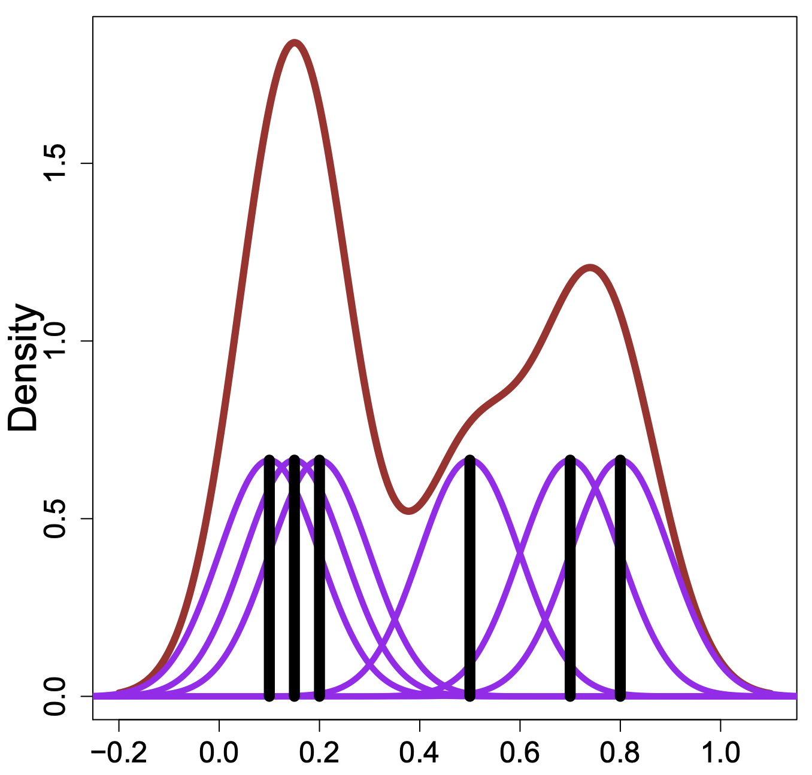
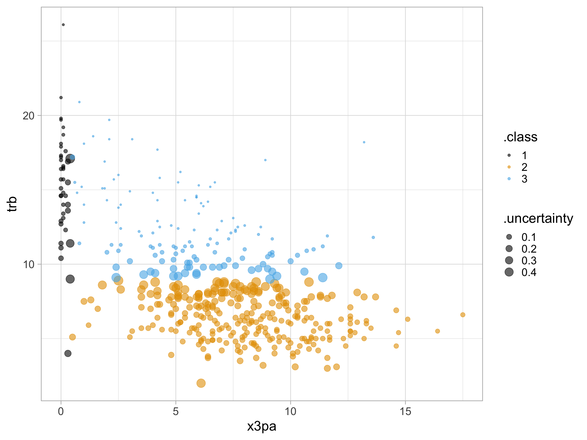
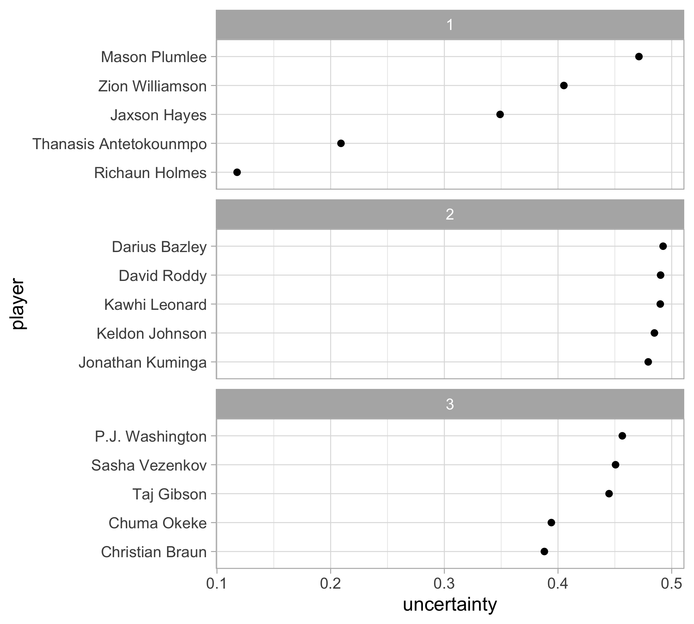

Unsupervised learning: Gaussian mixture models
SURE 2024
Department of Statistics & Data Science
Carnegie Mellon University
Background
Previously: clustering
Goal: partition \(n\) data points into \(K\) subgroups, where roughly points within group are more “similar” than points between groups
Previous methods: \(k\)-means clustering and hierarchical clustering
- Classification vs clustering
Classification
We are given labeled (categorical) data
Focus on generalization (i.e. we want to have a classifier that performs well on predicting new (test) data)
Clustering
We are only given the points (with no labels)
We want to find interesting subgroups/structure in the data
Previously: clustering
Previous methods: \(k\)-means clustering and hierarchical clustering
Output hard assignments, strictly assigning observations to only one cluster
What about soft assignments and uncertainty in the clustering results?
Assigns each observation a probability of belonging to a cluster
Incorporate statistical modeling into clustering
- We want to estimate the density of the observations in some way that allows us to extract clusters
Motivating figure
Model-based clustering
Key idea: data are considered as coming from a mixture of underlying probability distributions
Most popular method: Gaussian mixture model (GMM)
Each observation is assumed to be distributed as one of \(k\) multivariate normal distributions
\(k\) is the number of clusters (components)
Previously: kernel density estimation
Kernel density estimator: \(\displaystyle \hat{f}(x) = \frac{1}{n} \sum_{i=1}^n \frac{1}{h} K_h(x - x_i)\)
Smooth each data point into a small density bumps
Sum all these small bumps together to obtain the final density estimate
Use every observation when estimating the density for new points
We want to estimate the density of the points in some way that allows us to extract clusters
Mixture models
- Model the density as a mixture of distributions

Mixture models
Formally, \[\displaystyle f(x) = \sum_{k=1}^K \tau_k f_k(x)\]
where
\(f_k\) are some distributions
\(\tau_k \ge 0\) and \(\sum_{k=1}^K \tau_k = 1\) are the mixture weights
\(K\) is the number of mixture components (i.e. the number of clusters)
Mixture models
This is a data generating process
Imagine that each cluster (component) has a different distribution
Task: Generate a new observation (i.e. sample) from a mixture model
Choose a cluster by drawing \(Z \in \{1, \dots, K\}\), where \(P(Z = k) = \tau_k\)
- i.e. \(Z\) is a categorical latent variable indicating which cluster the new observation is from
Generate an observation from the distribution \(f_Z\) (corresponding to cluster \(Z\))
Hence \(\displaystyle f(x) = \sum_{k=1}^K P(Z = k) p (x \mid Z = k) = \sum_{k=1}^K \tau_k f_Z(x)\)
Gaussian mixture models (GMMs)
Assume a parametric mixture model, with parameters \(\theta_k\) for the \(k\)th component \[f(x) = \sum_{k=1}^K \tau_k f_k(x; \theta_k)\]
Gaussian mixture models (GMMs) are perhaps the most popular mixture models
- Assume each component is Gaussian (normal), where the 1D case is
\[f_k(x; \theta_k) = N(x; \mu_k, \sigma_k^2) = \frac{1}{\sqrt{2 \pi \sigma_k^2}}\text{exp} \left( -\frac{(x - \mu_k)^2}{2 \sigma_k^2} \right)\]
with mean \(\mu_k\) and variance \(\sigma_k ^2\)
- We need to estimate each \(\{\tau_1, \dots, \tau_k\}\), \(\{\mu_1, \dots, \mu_k\}\), \(\{\sigma_1, \dots, \sigma_k\}\)
Gaussian mixture models (GMMs)
Model \(\tau_1, \tau_2, \tau_3\) and
\(f_{\text{red}}(x) = N(\mu_{\text{red}}, \sigma^2_{\text{red}})\)
\(f_{\text{blue}}(x) = N(\mu_{\text{blue}}, \sigma^2_{\text{blue}})\)
\(f_{\text{green}}(x) = N(\mu_{\text{green}}, \sigma^2_{\text{green}})\)
Estimating a mixture model
What can we do to soft-cluster our data?
For an observation \(x\), compute the weight for \(x\) to belong to cluster \(k\) for \(k \in \{1, \dots, K\}\) \[ P(Z = k \mid X = x) = \frac{P(X = x \mid Z = k) P(Z = k)}{\sum_{j}P(X = x \mid Z = j) P(Z = j)} =\frac{\tau_{k} \ N(\mu_{k}, \sigma_{k}^{2})}{\sum_{j=1}^{K} \tau_{j} \ N(\mu_{j}, \sigma^2_{j})}\]
(recall that \(\displaystyle f(x) = \sum_{k=1}^K \tau_k \ N(\mu_k, \sigma^2_k)\))
How do we estimate the parameters of the mixture model (i.e. the \(\tau_k, \mu_k, \sigma_k\))?
We don’t know which component (i.e. the true labels) an observation actually belongs to
\(Z\) is a latent variable (since the true cluster labels are not observed)
This is known as the missing data or latent variable problems
Estimating a mixture model: maximum likelihood
Likelihood function: how likely to observe data for given parameter values
Setup: Given observations \(X_1, \dots, X_n\)
Task: Estimate the parameters of a mixture model
- What if we know the true cluster labels \(Z_1, \dots, Z_n\)? We can just use maximum likelihood estimation and maximize \[L\{\left(\tau_k, \mu_k, \sigma^2_k \right)_{k=1}^K\} = \sum_{i=1}^n \log f(X_i, Z_i)\] (just take data from each group, compute the fraction of points \(\tau_k\), the mean \(\mu_k\), and the variance \(\sigma^2\))
- In our case, since we do not know the cluster labels \(Z_i\), we should try to maximize the (marginal) likelihood of the observed data
\[\mathcal L\{\left(\tau_k, \mu_k, \sigma^2_k \right)_{k=1}^K\} = \sum_{i=1}^n \log f(X_i) = \sum_{i=1}^n \log \left[\sum_{k=1}^K f(X_i, k)\right]\]
Estimating a mixture model: EM algorithm
Expectation–maximization (EM) algorithm is a method for (approximately) maximizing the (marginal) likelihood in the presence of missing data
For a GMM:
First, initialize the model parameters randomly
Then, alternate between the following two steps (keep repeating until nothing changes)
E-step: compute the cluster memberships for each point
M-step: recompute/update the parameters
Expectation-maximization (EM) algorithm
Alternate between the following:
- pretend to know the probability each observation belongs to each group, to estimate the parameters of the components
- pretend to know the parameters of the components, to estimate the probability each observation belong to each group
Start with initial guesses about \(\tau_1, \dots, \tau_k\), \(\mu_1, \dots, \mu_k\), \(\sigma_1, \dots, \sigma_k\)
Repeat until nothing changes:
E-step: calculate \(\hat{z}_{ik}\), the weight for observation \(i\) belonging to cluster \(k\)
M-step: update parameter estimates with weighted MLE using \(\hat{z}_{ik}\)
Is this familiar?
- In GMMs, we’re essentially guessing the latent variables \(Z_i\) and pretending to know the parameters to perform maximum likelihood estimation
This resembles the \(k\)-means algorithm!
The cluster centroids are chosen at random, and then recomputed/updated
This is repeated until the cluster assignments stop changing
- Instead of assigning each point to a single cluster, we “softly” assign them so they contribute fractionally to each cluster
How does this relate back to clustering?
From the EM algorithm: \(\hat{z}_{ik}\) is the estimated weight for observation \(i\) belonging to cluster \(k\) (i.e. soft membership)
assign observation \(i\) to a cluster with the largest \(\hat{z}_{ik}\)
measure cluster assignment uncertainty of \(\displaystyle 1 - \max_k \hat{z}_{ik}\)
Our parameters determine the type of clusters
In the 1D case, there are two options:
- each cluster is assumed to have equal variance (spread): \(\sigma_1^2 = \sigma_2^2 = \dots = \sigma_k^2\)
- each cluster is allowed to have a different variance
But that is only 1D… what happens in multiple dimensions?
Multivariate GMMs
\[f(x) = \sum_{k=1}^K \tau_k f_k(x; \theta_k) \qquad \text{where }f_k(x; \theta_k) \sim N(\boldsymbol{\mu}_k, \boldsymbol{\Sigma}_k)\]
Each component is a multivariate normal distribution:
- \(\boldsymbol{\mu}_k\) is a vector of means in \(p\) dimensions
- \(\boldsymbol{\Sigma}_k\) is the \(p \times p\) covariance matrix - describes the joint variability between pairs of variables
\[\sum=\left[\begin{array}{cccc} \sigma_{1}^{2} & \sigma_{1,2} & \cdots & \sigma_{1, p} \\ \sigma_{2,1} & \sigma_{2}^{2} & \cdots & \sigma_{2, p} \\ \vdots & \vdots & \ddots & \vdots \\ \sigma_{p, 1} & \sigma_{p, 2}^{2} & \cdots & \sigma_{p}^{2} \end{array}\right]\]
Covariance constraints
\[\sum=\left[\begin{array}{cccc} \sigma_{1}^{2} & \sigma_{1,2} & \cdots & \sigma_{1, p} \\ \sigma_{2,1} & \sigma_{2}^{2} & \cdots & \sigma_{2, p} \\ \vdots & \vdots & \ddots & \vdots \\ \sigma_{p, 1} & \sigma_{p, 2}^{2} & \cdots & \sigma_{p}^{2} \end{array}\right]\]
As the number of dimensions increases, model fitting and estimation become increasingly difficult
We can use constraints on multiple aspects of the \(k\) covariance matrices:
volume: size of the clusters, i.e., number of observations,
shape: direction of variance, i.e. which variables display more variance
orientation: aligned with axes (low covariance) versus tilted (due to relationships between variables)
Covariance constraints

The three letters in the model name denote, in order, the volume, shape, and orientation across clusters
E: equal and V: varying (VVV is the most flexible, but has the most parameters)
Two II: spherical, one I: diagonal, the remaining are general
How do we know which one to choose?
Bayesian information criterion (BIC)
This is a statistical model
\[f(x) = \sum_{k=1}^K \tau_k f_k(x; \theta_k) \qquad \text{where }f_k(x; \theta_k) \sim N(\boldsymbol{\mu}_k, \boldsymbol{\Sigma}_k)\]
Use a model selection procedure for determining which best characterizes the data
Specifically, use a penalized likelihood measure \[\text{BIC} = 2\log \mathcal{L} - m\log n\]
\(\log \mathcal{L}\): log-likelihood of the considered model
with \(m\) parameters (VVV has the most parameters) and \(n\) observations
penalizes large models with many clusters without constraints
use BIC to choose the covariance constraints AND number of clusters
Example
Data: NBA player statistics per 100 possessions (2023-24 regular season)
Obtained via ballr package
library(tidyverse)
theme_set(theme_light())
nba_players <- read_csv("https://raw.githubusercontent.com/36-SURE/36-SURE.github.io/main/data/nba_players.csv")
head(nba_players)# A tibble: 6 × 33
rk player pos age tm g gs mp fg fga fgpercent x3p
<dbl> <chr> <chr> <dbl> <chr> <dbl> <dbl> <dbl> <dbl> <dbl> <dbl> <dbl>
1 1 Preciou… PF-C 24 TOT 74 18 1624 7.2 14.4 0.501 0.8
2 2 Bam Ade… C 26 MIA 71 71 2416 10.9 21 0.521 0.3
3 3 Ochai A… SG 23 TOT 78 28 1641 5.2 12.7 0.411 1.8
4 4 Santi A… PF 23 MEM 61 35 1618 7.5 17.2 0.435 3.2
5 5 Nickeil… SG 25 MIN 82 20 1921 6.1 13.8 0.439 3.4
6 6 Grayson… SG 28 PHO 75 74 2513 6.6 13.3 0.499 4
# ℹ 21 more variables: x3pa <dbl>, x3ppercent <dbl>, x2p <dbl>, x2pa <dbl>,
# x2ppercent <dbl>, ft <dbl>, fta <dbl>, ftpercent <dbl>, orb <dbl>,
# drb <dbl>, trb <dbl>, ast <dbl>, stl <dbl>, blk <dbl>, tov <dbl>, pf <dbl>,
# pts <dbl>, x <lgl>, ortg <dbl>, drtg <dbl>, link <chr>Implementation with mclust package
Select the model and number of clusters
Use Mclust() function to search over 1 to 9 clusters (default) and the different covariance constraints (i.e. models)
library(mclust)
# x3pa: 3pt attempts per 100 possessions
# trb: total rebounds per 100 possessions
nba_mclust <- nba_players |>
select(x3pa, trb) |>
Mclust()
summary(nba_mclust)----------------------------------------------------
Gaussian finite mixture model fitted by EM algorithm
----------------------------------------------------
Mclust VVV (ellipsoidal, varying volume, shape, and orientation) model with 3
components:
log-likelihood n df BIC ICL
-2246.359 452 17 -4596.65 -4739.919
Clustering table:
1 2 3
40 280 132 View clustering summary
View clustering assignments
Display the BIC for each model and number of clusters
How do the cluster assignments compare to the positions?
Two-way table to compare the clustering assignments with player positions
(What’s the way to visually compare the two labels?)
Positions
Clusters C C-PF PF PF-C PF-SF PG PG-SG SF SF-PF SF-SG SG SG-PG
1 34 2 3 0 0 1 0 0 0 0 0 0
2 3 0 33 0 1 78 4 70 1 1 88 1
3 43 1 53 1 0 3 0 22 1 0 8 0Takeaway: positions tend to fall within particular clusters
What about the cluster probabilities?
nba_player_probs <- nba_mclust$z
colnames(nba_player_probs) <- c("cluster1", "cluster2", "cluster3")
nba_player_probs <- nba_player_probs |>
as_tibble() |>
mutate(player = nba_players$player) |>
pivot_longer(!player, names_to = "cluster", values_to = "prob")
nba_player_probs |>
ggplot(aes(prob)) +
geom_histogram() +
facet_wrap(~ cluster)Which players have the highest uncertainty?
nba_players |>
mutate(cluster = nba_mclust$classification,
uncertainty = nba_mclust$uncertainty) |>
group_by(cluster) |>
slice_max(uncertainty, n = 5) |>
mutate(player = fct_reorder(player, uncertainty)) |>
ggplot(aes(x = uncertainty, y = player)) +
geom_point(size = 3) +
facet_wrap(~ cluster, scales = "free_y", nrow = 3)
Challenges and resources
What if the data are not normal (ish) and instead are skewed?
Apply a transformation, then perform GMM
GMM on principal components of data
Review paper: Model-Based Clustering
Book: Model-Based Clustering and Classification for Data Science